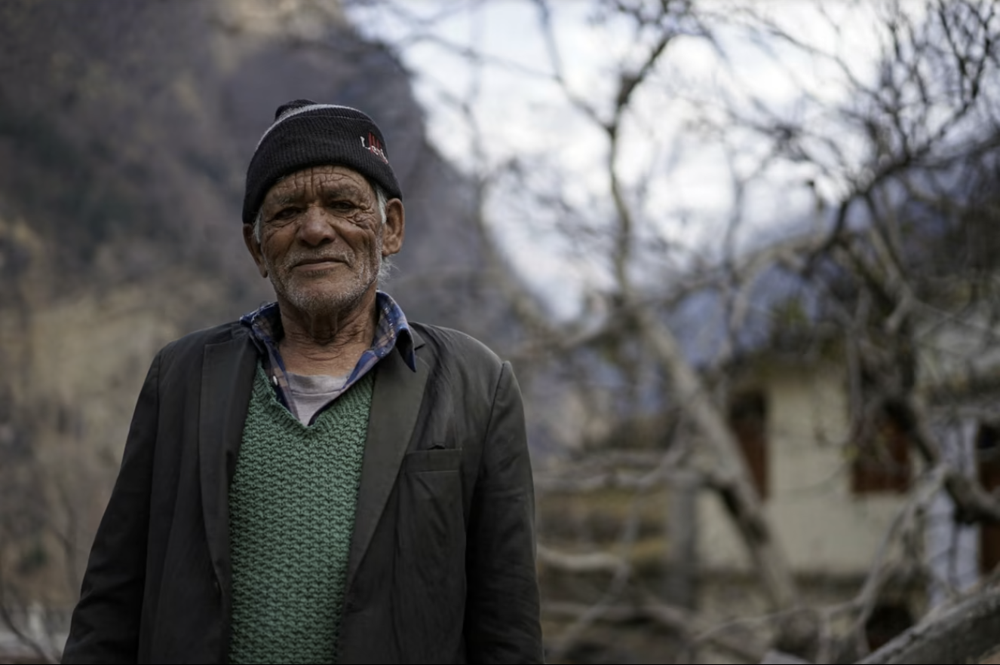
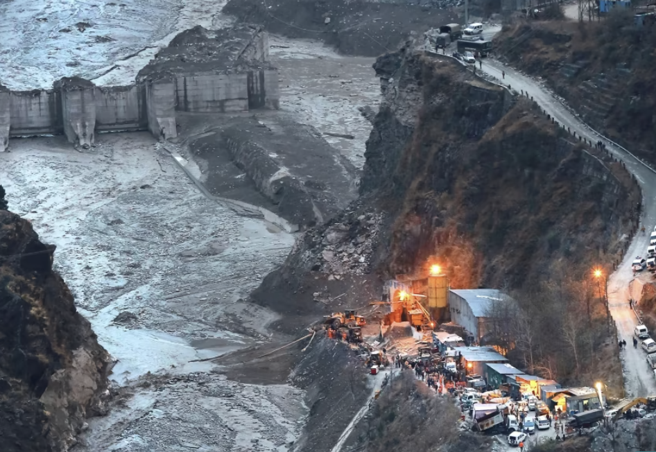

Chandra Singh Rana tends to his crops as he does almost every morning in Reni,
his mountain village hidden in the Indian Himalayas. He shivers slightly in the
crisp winter air, his breath slightly visible as the 77-year-old works the fields
with his grandson. He stops for a breath, turning to face the spectacular Nanda Devi,
one of the tallest summits in the world, and notices a trail of smoke emerging from the
wooded slopes of the mountains leading to the peak. Suddenly, a faint rumble begins,
quickly turning into a roar as a torrent of water, stones and mud begins flooding through
the steep river valley that divides Reni.
Rana grabs his grandson and flees to higher
ground with his fellow villagers who were able to escape the flood. He finally makes it
to safety and turns back, gazing at the chaos enveloping the river valley.
The sludge continues to tear through the village, rapidly gaining speed as it flows, destroying
a bridge and two hydropower plants. Faint cries reach his ears as over two hundred villagers are
consumed by the tsunami. The flood that was caused by a rockslide almost fifteen miles away from
one of the destroyed hydropower plants.

Dam two days after disaster
This tragedy in Rana’s village that happened in the beginning of 2022,
along with many others around the world, can be attributed to the rising temperatures in the Hindu
Kush-Himalayan regions. Global warming has caused glaciers, like the one on Nanda Devi, to recede,
leaving local residents at risk of rockslides, mudslides, and other hazards (Parkin). Furthermore,
this is not a problem unique to the Himalayas. French guides in the Alps are losing their livelihoods
as routes become unusable, countries like Nepal are slowly losing their tourist incomes, and even
animals are affected as their habitats are destroyed. Many people consider climate change to be a far
off problem that hasn’t taken an obvious shape, that hasn’t affected anyone, or has affected very few.
Yet, by exploring the fragile mountain systems of our world and the animals and people who live there,
we can see how climate change is already taking root.